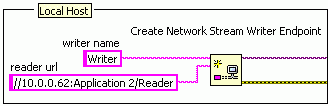

|
Note��Only one application on each computer can specify the default context. Therefore, if you have multiple applications on a single computer that use network streams, you must assign a URL instead of a name to each endpoint in those applications. |
LabVIEW identifies every network stream endpoint with a URL. When you specify a name for an endpoint with the writer name terminal of the Create Network Stream Writer Endpoint function or the reader name terminal of the Create Network Stream Reader Endpoint function, LabVIEW uses that name to create a URL with the following syntax:
ni.dex://host_name:context_name/endpoint_name
The following table describes each component of this URL.
| URL Component | Description | ||
|---|---|---|---|
| ni.dex | The protocol of the URL. The dex protocol identifies the URL as an endpoint URL. | ||
| host_name | The project alias, DNS name, or IP address of the computer on which the endpoint resides. The default value for this component is localhost, which routes to the network location of the computer on which the endpoint resides. | ||
| context_name | A string value that refers to the application the endpoint resides in. This component is an empty string unless you specify a URL that includes a context name with the writer name terminal of the Create Network Stream Writer Endpoint function or the reader name terminal of the Create Network Stream Reader Endpoint function.
|
||
| endpoint_name | The name that you assign to the endpoint with the writer name terminal of the Create Network Stream Writer Endpoint function or the reader name input of the Create Network Stream Reader Endpoint function. |
To create a valid network stream, use endpoint URLs to prompt a writer and a reader endpoint to connect to each other. Perform this task by wiring the URL of a remote endpoint to the reader url input on the Create Network Stream Writer Endpoint function or the writer url input on the Create Network Stream Reader Endpoint function.
The URL you must specify in these terminals varies depending on the network location of the remote endpoint. The following sections show examples of prompting endpoints to connect with each other.
|
Note��Endpoint URLs are not case sensitive. However, when you specify an endpoint URL, you must replace any reserved characters that you use with the corresponding escape codes to prevent parsing errors. |
When you connect to an endpoint on a remote computer that runs one application that uses network streams, as shown in the figure above, you must use a URL with the following syntax to prompt a connection between the endpoints:
//host_name/endpoint_name
Complete the following steps to use a URL with this syntax to prompt a connection between two endpoints.
|
Note��LabVIEW searches for a valid interpretation of the host name in the following order:
|
When you connect to an endpoint on a remote computer that runs multiple applications that use network streams, as shown in the figure above, you must use a URL with the following syntax to prompt a connection between the endpoints:
//host_name:context_name/endpoint_name
Complete the following steps to use a URL with this syntax to prompt a connection between two endpoints.


When you connect to an endpoint within another application on the local host, as shown in the figure above, you must use a URL with the following syntax to prompt a connection between the endpoints:
//localhost:context_name/endpoint_name
Complete the following steps to use a URL with this syntax to prompt a connection between two endpoints.
|
Note��Because the local host runs two applications that use network streams, you must specify a URL instead of a name for each endpoint. |